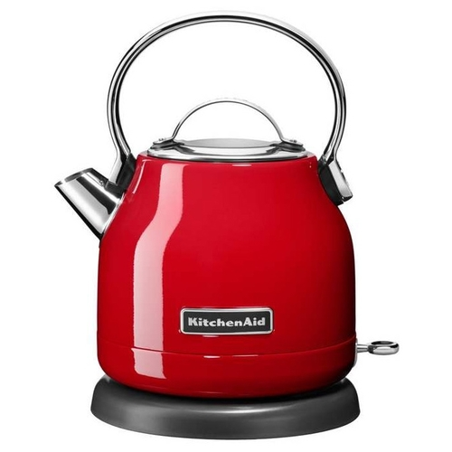

Чайник BORK K780 VS KitchenAid 5KEK1222
Современная техника отличается от ретро тем, что экономит самое ценное на сегодняшний день – время. Ретро дизайн - это на любителя, а вот ретро технологии это вчерашний, а быть может и позавчерашний день. Покупая Kitchenaid, вы покупаете не только ретро дизайн, но и ретро технологии.
Чайник KitchenAid 5KEK1222
Преимущества KitchenAid, которые пытаются продать:
-
Дизайн и выбор цветов*
Примечание: Ненадежная эмаль у этих чайников - скалывается, особенно по краям горлышка - в местах соединения с крышкой -
Цельнометаллический корпус*
Примечание: Нет окошка для контроля уровня воды - приходится каждый раз открывать и смотреть - Срок гарантии 2 года
- Компания, которая изобрела миксеры в 1919 году
- KitchenAid переводится, как кухонный помощник
-
Удобная, большая ручка*
Примечание: Ручка сделана для удобного переноса, но наливать воду в чайник из-за высокого вылета ручки очень неудобно
Характеристики KitchenAid:
- Потребляемая мощность: 2200 Вт
- Объём л.: 1,25 л
- Съемный фильтр для накипи
- База с поворотом 360°
Преимущества чайника BORK K780:
- Современный тип управления (LCD дисплей, запатентованные звуковые сигналы, русскоязычное меню с 5 автоматическими режимами, гарантирующими идеальную температуру для каждого чая, on-line отображение температуры воды)
- Инновационный сенсорный датчик выключения питания, находится в нагревательном элементе. Эта технология позволит отключиться чайнику при наборе необходимой температуры, даже при открытой крышке. Что делает его использование безопасным
- Уникальная технология Boil First. Данная функция позволяет предварительно вскипятить воду, а после довести ее до нужной температуры для выбранного сорта чая или кофе
- Экологичность. Корпус изящного чайника изготовлен из немецкого термостойкого стекла Schott Duran, не содержащего примеси и посторонние компоненты. Графин конической формы с силиконовым основанием не повредит поверхность
- Объём 0,5 л. - 1,7 л. Идеальное решение, как для одного пользователя, так и для большой компании!
- Тихая работа. Полированный нагревательный элемент и специально разработанная форма графина обеспечивают низкий уровень шума. Это позволит общаться даже шёпотом во время работы чайника
- Быстрое закипание. Конический выступ на нагревательном элементе, увеличивает площадь соприкосновения с водой, поэтому чайник быстрее закипает и как результат расходует меньше электроэнергии
- Эргономическая ручка, изготовленная из анодированного алюминия и soft покрытия, обеспечивает удобное использование. Ручка крепится к стеклянному графину без единого шурупа
- Реальная цена, отличного продукта!
Покупая KitchenAid, вы покупаете не только ретро дизайн, но и ретро технологии.